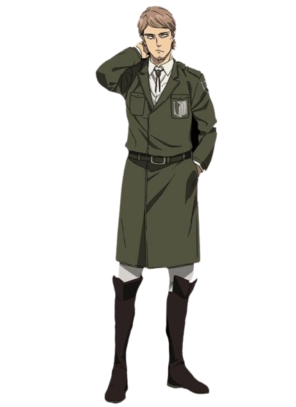

Jean Kirstein is a graduate of the 104th Cadet Corps who later joins the Survey Corps. Practical and level-headed, he is known for his leadership skills, honesty, and ability to remain calm under pressure. His growth as both a soldier and a leader earns him the respect of his comrades. Jean hails from Wall Rose's Trost District, and joined the military with hopes of living a peaceful life within the walls as part of the Military Police Regiment, but would later find himself joining the Scout Regiment.
| Japanese Name | ジャン・キルシュタイン |
|---|---|
| Affiliation | Survey Corps |
| Rank | Soldier |
| Occupation | Soldier |
| Height | 190 cm |
| First Appearance | Episode 3 |